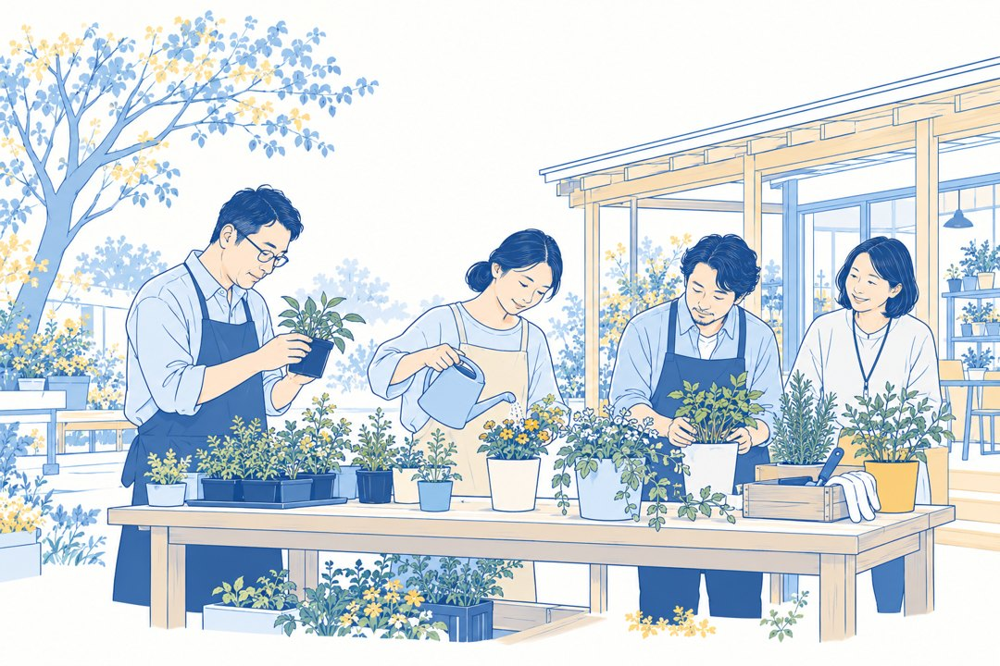
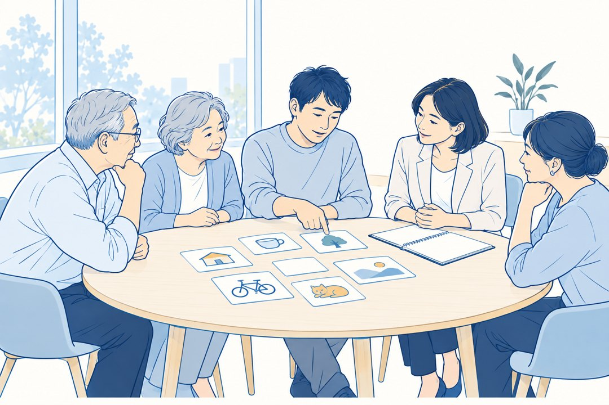
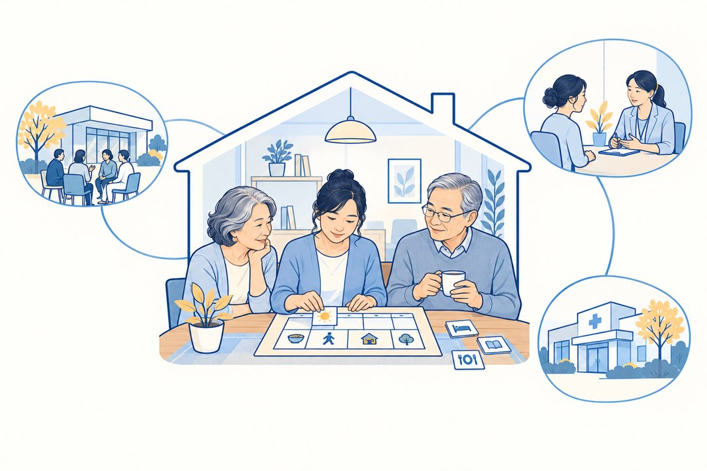
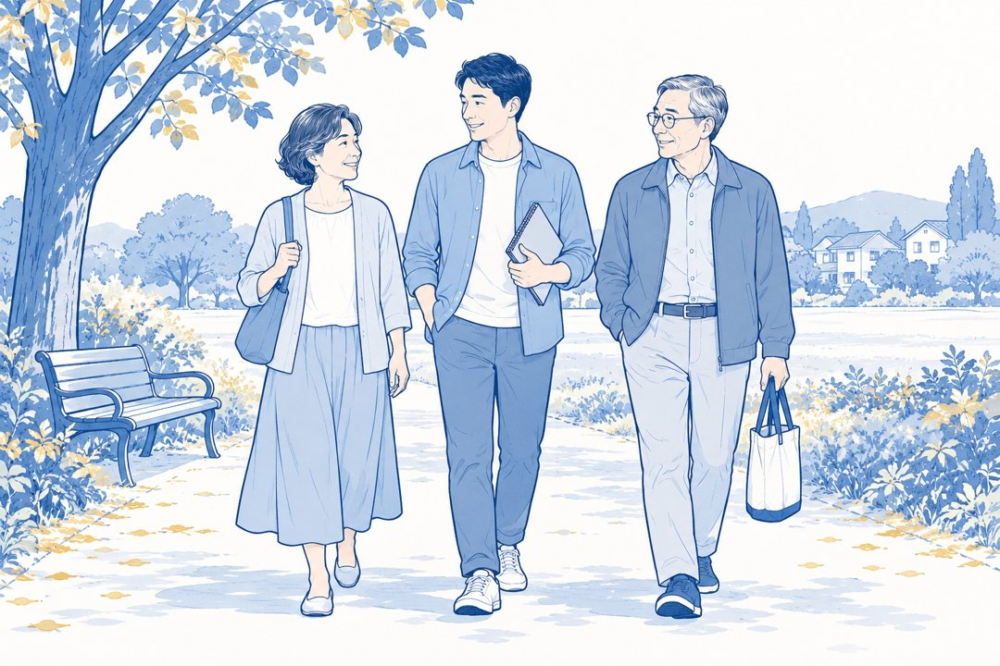

上午
日本实践专题分享
榉之乡的发展历程、支持理念，以及成年孤独症人士的生活角色、工作与社会支持实践。
日本榉之乡 × 上海爱照护
成年孤独症（ASD）家庭未来生活专题研讨交流会
孩子已经长大，父母却在慢慢变老。当我们无法继续照护孩子，谁来支持他们？当我们自己也需要养老和照护，又能依靠谁？
成年子女的未来生活，与父母自己的晚年生活，都值得从今天开始认真准备。
这一次，我们特别邀请日本榉之乡的内山智裕先生来到上海，与家庭及相关专业机构共同交流，探讨两代人未来生活的更多可能。

01 日本实践
让成年孤独症人士，拥有更丰富、更有尊严的生活。
特邀分享嘉宾：内山智裕（Tomohiro Uchiyama）先生，日本社会福祉法人「けやきの郷」（榉之乡）总务部长、社会福祉士、精神保健福祉士。结合榉之乡的长期实践，分享成年孤独症人士在工作、生活、社会参与及“共同自立”方面的经验。
当家庭不再能够独自承担照护责任，日本是如何建立社会支持的？
02 交流安排

上午
榉之乡的发展历程、支持理念，以及成年孤独症人士的生活角色、工作与社会支持实践。
下午
围绕日常生活安排、行为背后的原因，以及家庭与社区支持关系，结合家属和专业人士在报名时提前提交的真实问题，由内山先生分享日本实践经验并引导现场互动，共同探讨成年孤独症人士及其家庭未来生活的可能性。
不是一天解决所有问题，而是帮助家庭找到开始准备未来的方向。
03 爱照护特别分享

特别分享 · 20–25分钟
当两代人都需要支持
爱照护将用20–25分钟，分享正在探索的“家庭智康院”——AI赋能的双养全生命周期支持方案。
以家庭生活为中心，通过每年定期的机构专业评估与适宜干预，结合AI辅助的功能变化识别、个性化支持及连续照护，连接家庭、社区、医疗与专业照护资源。
让两代人尽可能生活在熟悉的家庭环境中，获得长期、持续、有温度的支持。
04 邀请对象
重点邀请
25岁及以上的成年孤独症人士与50岁及以上的父母尤其欢迎已经开始思考成年子女未来生活、父母自身养老，以及两代人长期照护安排的家庭。有相近未来照护需求的其他成年心智障碍家庭，也欢迎提出参与申请。
高校及科研院所、保险机构、养老与照护机构、医疗康复机构、辅具及智能设备企业，以及相关公益和社会组织。
我们希望让家庭的真实需要，与专业研究、照护服务、AI技术及社会资源建立更多连接。

05 活动信息
家庭参与费
— ／家庭
包含1–3位家庭成员参加全天活动及午餐。第4位家庭成员如需用餐，仅加收—午餐费；不需用餐则不加收。每个家庭最多4人参加。
专业机构参与费
— ／人
面向高校及科研院所、保险机构、心智障碍照护机构、医疗康复机构、辅具及智能设备企业，以及相关公益和社会组织。专业机构按实际参加人数收费，采用独立报名及审核流程。
承办单位 上海爱照护养老服务有限公司
06 会前准备
为了让交流更有针对性，我们希望在活动开始前，了解您最关心的未来生活问题。
对于需要进一步沟通的申请，我们会安排工作人员联系。
名额有限。提交申请不代表正式获得参会名额。